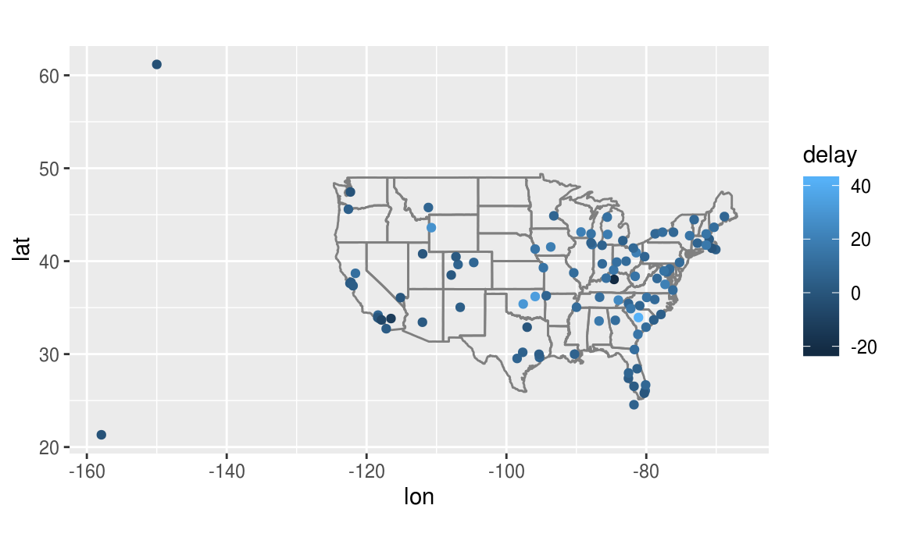
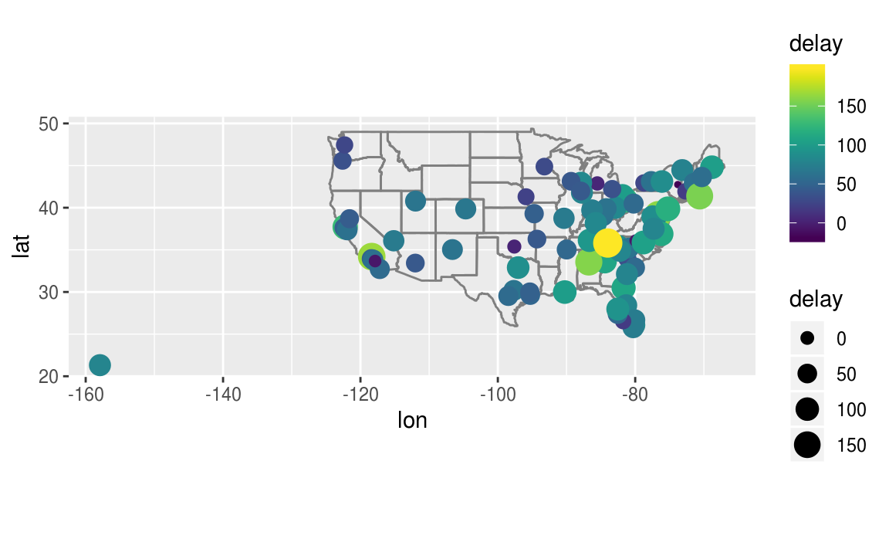

If you find any typos, errors, or places where the text may be improved, please let me know. The best ways to provide feedback are by GitHub or hypothes.is annotations.
Opening an issue or submitting a pull request on GitHub
Adding an annotation using hypothes.is. To add an annotation, select some text and then click the on the pop-up menu. To see the annotations of others, click the in the upper right-hand corner of the page.
13 Relational data
13.1 Introduction
library("tidyverse")
library("nycflights13")The package datamodelr is used to draw database schema.
library("datamodelr")13.2 nycflights13
Exercise 13.2.1
Imagine you wanted to draw (approximately) the route each plane flies from its origin to its destination. What variables would you need? What tables would you need to combine?
Drawing the approximate flight paths requires the latitude and longitude of the both the origin and destination airports of each flights.
This requires the flights and airports tables.
The flights table has the origin (origin) and destination (dest) airport of each flight.
The airports table has the longitude (lon) and latitude (lat) of each airport.
To get the latitude and longitude for the origin and destination of each flight,
requires two joins for flights to airports,
once for the latitude and longitude of the origin airport,
and once for the latitude and longitude of the destination airport.
I use an inner join in order to drop any flights with missing airports since they will not have a longitude or latitude.
flights_latlon <- flights %>%
inner_join(select(airports, origin = faa, origin_lat = lat, origin_lon = lon),
by = "origin"
) %>%
inner_join(select(airports, dest = faa, dest_lat = lat, dest_lon = lon),
by = "dest"
)This plots the approximate flight paths of the first 100 flights in the flights dataset.
flights_latlon %>%
slice(1:100) %>%
ggplot(aes(
x = origin_lon, xend = dest_lon,
y = origin_lat, yend = dest_lat
)) +
borders("state") +
geom_segment(arrow = arrow(length = unit(0.1, "cm"))) +
coord_quickmap() +
labs(y = "Latitude", x = "Longitude")
#>
#> Attaching package: 'maps'
#> The following object is masked from 'package:purrr':
#>
#> map
Exercise 13.2.2
I forgot to draw the relationship between weather and airports.
What is the relationship and how should it appear in the diagram?
The column faa$airports is a foreign key of weather$origin.
The following drawing updates the one in Section 13.2 to include this relation.
The line representing the new relation between weather and airports is colored black.
The lines representing the old relations are gray and thinner.

Exercise 13.2.3
Weather only contains information for the origin (NYC) airports.
If it contained weather records for all airports in the USA, what additional relation would it define with flights?
If the weather was included for all airports in the US, then it would provide the weather for the destination of each flight.
The weather data frame columns (year, month, day, hour, origin) are a foreign key for the flights data frame columns (year, month, day, hour, dest).
This would provide information about the weather at the destination airport at the time of the flight take off, unless the arrival date-time were calculated.
So why was this not a relationship prior to adding additional rows to the weather table?
In a foreign key relationship, the collection columns of columns in the child table
must refer to a unique collection of columns in the parent table.
When the weather table only contained New York airports,
there were many values of (year, month, day, hour, dest) in flights that
did not appear in the weather table.
Therefore, it was not a foreign key. It was only after
all combinations of year, month, day, hour, and airports that are defined in flights
were added to the weather table that there existed this relation between these tables.
Exercise 13.2.4
We know that some days of the year are “special”, and fewer people than usual fly on them. How might you represent that data as a data frame? What would be the primary keys of that table? How would it connect to the existing tables?
I would add a table of special dates, similar to the following table.
special_days <- tribble(
~year, ~month, ~day, ~holiday,
2013, 01, 01, "New Years Day",
2013, 07, 04, "Independence Day",
2013, 11, 29, "Thanksgiving Day",
2013, 12, 25, "Christmas Day"
)The primary key of the table would be the (year, month, day) columns.
The (year, month, day) columns could be used to join special_days with other tables.
13.3 Keys
Exercise 13.3.1
Add a surrogate key to flights.
I add the column flight_id as a surrogate key.
I sort the data prior to making the key, even though it is not strictly necessary, so the order of the rows has some meaning.
flights %>%
arrange(year, month, day, sched_dep_time, carrier, flight) %>%
mutate(flight_id = row_number()) %>%
glimpse()
#> Observations: 336,776
#> Variables: 20
#> $ year <int> 2013, 2013, 2013, 2013, 2013, 2013, 2013, 2013, 2…
#> $ month <int> 1, 1, 1, 1, 1, 1, 1, 1, 1, 1, 1, 1, 1, 1, 1, 1, 1…
#> $ day <int> 1, 1, 1, 1, 1, 1, 1, 1, 1, 1, 1, 1, 1, 1, 1, 1, 1…
#> $ dep_time <int> 517, 533, 542, 544, 554, 559, 558, 559, 558, 558,…
#> $ sched_dep_time <int> 515, 529, 540, 545, 558, 559, 600, 600, 600, 600,…
#> $ dep_delay <dbl> 2, 4, 2, -1, -4, 0, -2, -1, -2, -2, -3, NA, 1, 0,…
#> $ arr_time <int> 830, 850, 923, 1004, 740, 702, 753, 941, 849, 853…
#> $ sched_arr_time <int> 819, 830, 850, 1022, 728, 706, 745, 910, 851, 856…
#> $ arr_delay <dbl> 11, 20, 33, -18, 12, -4, 8, 31, -2, -3, -8, NA, -…
#> $ carrier <chr> "UA", "UA", "AA", "B6", "UA", "B6", "AA", "AA", "…
#> $ flight <int> 1545, 1714, 1141, 725, 1696, 1806, 301, 707, 49, …
#> $ tailnum <chr> "N14228", "N24211", "N619AA", "N804JB", "N39463",…
#> $ origin <chr> "EWR", "LGA", "JFK", "JFK", "EWR", "JFK", "LGA", …
#> $ dest <chr> "IAH", "IAH", "MIA", "BQN", "ORD", "BOS", "ORD", …
#> $ air_time <dbl> 227, 227, 160, 183, 150, 44, 138, 257, 149, 158, …
#> $ distance <dbl> 1400, 1416, 1089, 1576, 719, 187, 733, 1389, 1028…
#> $ hour <dbl> 5, 5, 5, 5, 5, 5, 6, 6, 6, 6, 6, 6, 6, 6, 6, 6, 6…
#> $ minute <dbl> 15, 29, 40, 45, 58, 59, 0, 0, 0, 0, 0, 0, 0, 0, 0…
#> $ time_hour <dttm> 2013-01-01 05:00:00, 2013-01-01 05:00:00, 2013-0…
#> $ flight_id <int> 1, 2, 3, 4, 5, 6, 7, 8, 9, 10, 11, 12, 13, 14, 15…Exercise 13.3.2
Identify the keys in the following datasets
Lahman::Battingbabynames::babynamesnasaweather::atmosfueleconomy::vehiclesggplot2::diamonds
(You might need to install some packages and read some documentation.)
The answer to each part follows.
The primary key for
Lahman::Battingis (playerID,yearID,stint). The columns (playerID,yearID) are not a primary key because players can play on different teams within the same year.Lahman::Batting %>% count(playerID, yearID, stint) %>% filter(n > 1) %>% nrow() #> [1] 0The primary key for
babynames::babynamesis (year,sex,name). The columns (year,name) are not a primary key since there are separate counts for each name for each sex, and the same names can be used by morebabynames::babynames %>% count(year, sex, name) %>% filter(nn > 1) %>% nrow() #> [1] 0You may notice that in this example, we filter on
nninstead ofn. In this example, the name of the column generated bycount()is namednnbecause thebabynamesdata frame already contains a column namedn.This behavior requires knowing the names of the columns which
count()is being called on. The following code usesgroup_by()andn()to produces the same result.babynames::babynames %>% group_by(year, sex, name) %>% filter(n() > 1) %>% nrow() #> [1] 0The primary key for
nasaweather::atmosis (lat,long,year,month). The primary key represents the location and time that the measurement was taken.nasaweather::atmos %>% count(lat, long, year, month) %>% filter(n > 1) %>% nrow() #> [1] 0The column
id, the unique EPA identifier of the vehicle, is the primary key forfueleconomy::vehicles.fueleconomy::vehicles %>% count(id) %>% filter(n > 1) %>% nrow() #> [1] 0There is no primary key for
ggplot2::diamondssince there is no combination of variables that uniquely identifies each observation. This is implied by the fact that the number of distinct rows in the dataset is less than the total number of rows, meaning that there are some duplicate rows.ggplot2::diamonds %>% distinct() %>% nrow() #> [1] 53794 nrow(ggplot2::diamonds) #> [1] 53940Implicitly the row number is the primary key for
ggplot2::diamonds. So we could create an arbitrary identifier for observations in thediamondsdata set to use as a primary key.diamonds <- mutate(ggplot2::diamonds, id = row_number())
Exercise 13.3.3
Draw a diagram illustrating the connections between the Batting, Master, and Salaries tables in the Lahman package.
Draw another diagram that shows the relationship between Master, Managers, AwardsManagers.
How would you characterize the relationship between the Batting, Pitching, and Fielding tables?
For the Batting, Master, and Salaries tables:
Master- Primary key:
playerID
- Primary key:
BattingPrimary key:
playerID,yearID,stintForeign keys:
playerID=Master$playerID(many-to-1)
SalariesPrimary key:
yearID,teamID,playerIDForeign keys:
playerID=Master$playerID(many-to-1)
The columns teamID and lgID are not foreign keys even though they appear in multiple tables (with the same meaning) because they are not primary keys for any of the tables considered in this exercise.
The teamID variable references Teams$teamID, and lgID does not have its own table.
R for Data Science uses database schema diagrams to illustrate relations between the tables Most flowchart or diagramming software can be used used to create database schema diagrams, as well as some specialized database software. The diagrams in R for Data Science were created with OmniGraffle, and their sources can be found in its GitHub repository.
The following diagram was created with OmniGraffle in the same style as those
in R for Data Science .
It shows the relations between the Master, Batting and Salaries tables.

Another option to draw database schema diagrams is the R package datamodelr, which can programmatically create database schema diagrams.
The following code uses datamodelr to draw a diagram of the relations between the Batting, Master, and Salaries tables.
dm1 <- dm_from_data_frames(list(
Batting = Lahman::Batting,
Master = Lahman::Master,
Salaries = Lahman::Salaries
)) %>%
dm_set_key("Batting", c("playerID", "yearID", "stint")) %>%
dm_set_key("Master", "playerID") %>%
dm_set_key("Salaries", c("yearID", "teamID", "playerID")) %>%
dm_add_references(
Batting$playerID == Master$playerID,
Salaries$playerID == Master$playerID
)
dm_create_graph(dm1, rankdir = "LR", columnArrows = TRUE) %>%
dm_render_graph()For the Master, Manager, and AwardsManagers tables:
Master- Primary key:
playerID
- Primary key:
ManagersPrimary key:
yearID,teamID,inseasonForeign keys:
playerIDreferencesMaster$playerID(many-to-1)
AwardsManagers:Primary key:
playerID,awardID,yearIDForeign keys:
playerIDreferencesMaster$playerID(many-to-1)
For AwardsManagers, the columns (awardID, yearID, lgID) are not a primary
key because there can be, and have been ties, as indicated by the tie variable.
The relations between the Master, Managers, and AwardsManagers tables
are shown in the following two diagrams: the first created manually with OmniGraffle,
and the second programmatically in R with the datamodelr package.

dm2 <- dm_from_data_frames(list(
Master = Lahman::Master,
Managers = Lahman::Managers,
AwardsManagers = Lahman::AwardsManagers
)) %>%
dm_set_key("Master", "playerID") %>%
dm_set_key("Managers", c("yearID", "teamID", "inseason")) %>%
dm_set_key("AwardsManagers", c("playerID", "awardID", "yearID")) %>%
dm_add_references(
Managers$playerID == Master$playerID,
AwardsManagers$playerID == Master$playerID
)
dm_create_graph(dm2, rankdir = "LR", columnArrows = TRUE) %>%
dm_render_graph()The primary keys of Batting, Pitching, and Fielding are the following:
Batting: (playerID,yearID,stint)Pitching: (playerID,yearID,stint)Fielding: (playerID,yearID,stint,POS).
While Batting and Pitching has one row per player, year, stint, the Fielding
table has additional rows for each position (POS) a player played within a stint.
Since Batting, Pitching, and Fielding all share the playerID, yearID, and stint
we would expect some foreign key relations between these tables.
The columns (playerID, yearID, stint) in Pitching are a foreign key which
references the same columns in Batting. We can check this by checking that
all observed combinations of values of these columns appearing in Pitching
also appear in Batting. To do this I use an anti-join, which is discussed
in the section Filtering Joins.
nrow(anti_join(Lahman::Pitching, Lahman::Batting,
by = c("playerID", "yearID", "stint")
))
#> [1] 0Similarly, the columns (playerID, yearID, stint) in Fielding are a foreign key which references the same columns in Batting.
nrow(anti_join(Lahman::Fielding, Lahman::Batting,
by = c("playerID", "yearID", "stint")
))
#> [1] 0The following diagram shows the relations between the Batting, Pitching, and
Fielding tables.

13.4 Mutating Joins
flights2 <- flights %>%
select(year:day, hour, origin, dest, tailnum, carrier)Exercise 13.4.1
Compute the average delay by destination, then join on the airports data frame so you can show the spatial distribution of delays. Here’s an easy way to draw a map of the United States:
airports %>%
semi_join(flights, c("faa" = "dest")) %>%
ggplot(aes(lon, lat)) +
borders("state") +
geom_point() +
coord_quickmap()
(Don’t worry if you don’t understand what semi_join() does — you’ll learn about it next.)
You might want to use the size or color of the points to display the average delay for each airport.
avg_dest_delays <-
flights %>%
group_by(dest) %>%
# arrival delay NA's are cancelled flights
summarise(delay = mean(arr_delay, na.rm = TRUE)) %>%
inner_join(airports, by = c(dest = "faa"))avg_dest_delays %>%
ggplot(aes(lon, lat, colour = delay)) +
borders("state") +
geom_point() +
coord_quickmap()
Exercise 13.4.2
Add the location of the origin and destination (i.e. the lat and lon) to flights.
You can perform one join after another. If duplicate variables are found, by default, dplyr will distinguish the two by adding .x, and .y to the ends of the variable names to solve naming conflicts.
airport_locations <- airports %>%
select(faa, lat, lon)
flights %>%
select(year:day, hour, origin, dest) %>%
left_join(
airport_locations,
by = c("origin" = "faa")
) %>%
left_join(
airport_locations,
by = c("dest" = "faa")
)
#> # A tibble: 336,776 x 10
#> year month day hour origin dest lat.x lon.x lat.y lon.y
#> <int> <int> <int> <dbl> <chr> <chr> <dbl> <dbl> <dbl> <dbl>
#> 1 2013 1 1 5 EWR IAH 40.7 -74.2 30.0 -95.3
#> 2 2013 1 1 5 LGA IAH 40.8 -73.9 30.0 -95.3
#> 3 2013 1 1 5 JFK MIA 40.6 -73.8 25.8 -80.3
#> 4 2013 1 1 5 JFK BQN 40.6 -73.8 NA NA
#> 5 2013 1 1 6 LGA ATL 40.8 -73.9 33.6 -84.4
#> 6 2013 1 1 5 EWR ORD 40.7 -74.2 42.0 -87.9
#> # … with 3.368e+05 more rowsThis however, this default can be over-ridden using the suffix argument.
It is always good practice to have clear variable names, so I will use the
suffixes "_dest" and "_origin" to specify whether the column refers to
the destination or origin airport.
airport_locations <- airports %>%
select(faa, lat, lon)
flights %>%
select(year:day, hour, origin, dest) %>%
left_join(
airport_locations,
by = c("origin" = "faa")
) %>%
left_join(
airport_locations,
by = c("dest" = "faa"),
suffix = c("_origin", "_dest")
# existing lat and lon variables in tibble gain the _origin suffix
# new lat and lon variables are given _dest suffix
)
#> # A tibble: 336,776 x 10
#> year month day hour origin dest lat_origin lon_origin lat_dest
#> <int> <int> <int> <dbl> <chr> <chr> <dbl> <dbl> <dbl>
#> 1 2013 1 1 5 EWR IAH 40.7 -74.2 30.0
#> 2 2013 1 1 5 LGA IAH 40.8 -73.9 30.0
#> 3 2013 1 1 5 JFK MIA 40.6 -73.8 25.8
#> 4 2013 1 1 5 JFK BQN 40.6 -73.8 NA
#> 5 2013 1 1 6 LGA ATL 40.8 -73.9 33.6
#> 6 2013 1 1 5 EWR ORD 40.7 -74.2 42.0
#> # … with 3.368e+05 more rows, and 1 more variable: lon_dest <dbl>Exercise 13.4.3
Is there a relationship between the age of a plane and its delays?
The question does not specify whether the relationship is with departure delay or arrival delay. I will look at both.
To compare the age of the plane to flights delay, I merge flights with the planes, which contains a variable plane_year, with the year in which the plane was built.
To look at the relationship between plane age and departure delay, I will calculate the average arrival and departure delay for each age of a flight.
plane_cohorts <- inner_join(flights,
select(planes, tailnum, plane_year = year),
by = "tailnum"
) %>%
mutate(age = year - plane_year) %>%
filter(!is.na(age)) %>%
group_by(age) %>%
summarise(
dep_delay_mean = mean(dep_delay, na.rm = TRUE),
dep_delay_sd = sd(dep_delay, na.rm = TRUE),
arr_delay_mean = mean(arr_delay, na.rm = TRUE),
arr_delay_sd = sd(arr_delay, na.rm = TRUE),
n = n()
)I will look for a relationship between departure delay and age by plotting age against the average departure delay. The average departure delay is increasing for planes with ages up until 10 years. After that the departure delay decreases or levels off. The decrease in departure delay could be because older planes with many mechanical issues are removed from service or because air lines schedule these planes with enough time so that mechanical issues do not delay them. There are few planes older than 30 years, so the relationship is mostly noise after that.
ggplot(plane_cohorts, aes(x = age, y = dep_delay_mean)) +
geom_ribbon(
mapping = aes(
ymin = dep_delay_mean -
2 * dep_delay_sd / sqrt(n),
ymax = dep_delay_mean +
2 * dep_delay_sd / sqrt(n)
),
alpha = 0.3
) +
geom_point() +
scale_x_continuous("Age of plane (years)", breaks = seq(0, 50, by = 10)) +
scale_y_continuous("Mean Departure Delay (minutes)")
There is a similar relationship in arrival delays. Delays increase with the age of the plane until ten years, then it declines and flattens out.
ggplot(plane_cohorts, aes(x = age, y = arr_delay_mean)) +
geom_ribbon(
mapping = aes(
ymin = arr_delay_mean -
2 * arr_delay_sd / sqrt(n),
ymax = arr_delay_mean +
2 * arr_delay_sd / sqrt(n)
),
alpha = 0.3
) +
geom_point() +
scale_x_continuous("Age of Plane (years)", breaks = seq(0, 50, by = 10)) +
scale_y_continuous("Mean Arrival Delay (minutes)")
Exercise 13.4.4
What weather conditions make it more likely to see a delay?
Almost any amount of precipitation is associated with a delay. However, there is not a strong a trend above 0.02 in. of precipitation.
flight_weather <-
flights %>%
inner_join(weather, by = c(
"origin" = "origin",
"year" = "year",
"month" = "month",
"day" = "day",
"hour" = "hour"
))
flight_weather %>%
group_by(precip) %>%
summarise(delay = mean(dep_delay, na.rm = TRUE)) %>%
ggplot(aes(x = precip, y = delay)) +
geom_line() + geom_point()
Exercise 13.4.5
What happened on June 13, 2013? Display the spatial pattern of delays, and then use Google to cross-reference with the weather.
There was a large series of storms (derechos) in the southeastern US (see June 12-13, 2013 derecho series). The following plot show that the largest delays were in Tennessee (Nashville), the Southeast, and the Midwest, which were the locations of the derechos.
library(viridis)
#> Loading required package: viridisLite
flights %>%
filter(year == 2013, month == 6, day == 13) %>%
group_by(dest) %>%
summarise(delay = mean(arr_delay, na.rm = TRUE)) %>%
inner_join(airports, by = c("dest" = "faa")) %>%
ggplot(aes(y = lat, x = lon, size = delay, colour = delay)) +
borders("state") +
geom_point() +
coord_quickmap() +
scale_colour_viridis()
#> Warning: Removed 3 rows containing missing values (geom_point).
13.5 Filtering Joins
Exercise 13.5.1
What does it mean for a flight to have a missing tailnum?
What do the tail numbers that don’t have a matching record in planes have in common?
(Hint: one variable explains ~90% of the problems.)
American Airlines (AA) and Envoy Airlines (MQ) don’t report tail numbers.
flights %>%
anti_join(planes, by = "tailnum") %>%
count(carrier, sort = TRUE)
#> # A tibble: 10 x 2
#> carrier n
#> <chr> <int>
#> 1 MQ 25397
#> 2 AA 22558
#> 3 UA 1693
#> 4 9E 1044
#> 5 B6 830
#> 6 US 699
#> # … with 4 more rowsExercise 13.5.2
Filter flights to only show flights with planes that have flown at least 100 flights.
planes_gt100 <-
filter(flights) %>%
group_by(tailnum) %>%
count() %>%
filter(n > 100)
flights %>%
semi_join(planes_gt100, by = "tailnum")
#> # A tibble: 229,202 x 19
#> year month day dep_time sched_dep_time dep_delay arr_time
#> <int> <int> <int> <int> <int> <dbl> <int>
#> 1 2013 1 1 517 515 2 830
#> 2 2013 1 1 533 529 4 850
#> 3 2013 1 1 544 545 -1 1004
#> 4 2013 1 1 554 558 -4 740
#> 5 2013 1 1 555 600 -5 913
#> 6 2013 1 1 557 600 -3 709
#> # … with 2.292e+05 more rows, and 12 more variables: sched_arr_time <int>,
#> # arr_delay <dbl>, carrier <chr>, flight <int>, tailnum <chr>,
#> # origin <chr>, dest <chr>, air_time <dbl>, distance <dbl>, hour <dbl>,
#> # minute <dbl>, time_hour <dttm>Exercise 13.5.3
Combine fueleconomy::vehicles and fueleconomy::common to find only the records for the most common models.
fueleconomy::vehicles %>%
semi_join(fueleconomy::common, by = c("make", "model"))
#> # A tibble: 14,531 x 12
#> id make model year class trans drive cyl displ fuel hwy cty
#> <int> <chr> <chr> <int> <chr> <chr> <chr> <int> <dbl> <chr> <int> <int>
#> 1 1833 Acura Integ… 1986 Subco… Auto… Fron… 4 1.6 Regu… 28 22
#> 2 1834 Acura Integ… 1986 Subco… Manu… Fron… 4 1.6 Regu… 28 23
#> 3 3037 Acura Integ… 1987 Subco… Auto… Fron… 4 1.6 Regu… 28 22
#> 4 3038 Acura Integ… 1987 Subco… Manu… Fron… 4 1.6 Regu… 28 23
#> 5 4183 Acura Integ… 1988 Subco… Auto… Fron… 4 1.6 Regu… 27 22
#> 6 4184 Acura Integ… 1988 Subco… Manu… Fron… 4 1.6 Regu… 28 23
#> # … with 1.452e+04 more rowsWhy does the above code join on make and model and not just model?
It is possible for two car brands (make) to produce a car with the same name (model).
In both the vehicles and common data we can find some examples.
For example, “Truck 4WD” is produced by many different brands.
fueleconomy::vehicles %>%
distinct(model, make) %>%
group_by(model) %>%
filter(n() > 1) %>%
arrange(model)
#> # A tibble: 126 x 2
#> # Groups: model [60]
#> make model
#> <chr> <chr>
#> 1 Audi 200
#> 2 Chrysler 200
#> 3 Mcevoy Motors 240 DL/240 GL Wagon
#> 4 Volvo 240 DL/240 GL Wagon
#> 5 Lambda Control Systems 300E
#> 6 Mercedes-Benz 300E
#> # … with 120 more rowsfueleconomy::common %>%
distinct(model, make) %>%
group_by(model) %>%
filter(n() > 1) %>%
arrange(model)
#> # A tibble: 8 x 2
#> # Groups: model [3]
#> make model
#> <chr> <chr>
#> 1 Dodge Colt
#> 2 Plymouth Colt
#> 3 Mitsubishi Truck 2WD
#> 4 Nissan Truck 2WD
#> 5 Toyota Truck 2WD
#> 6 Mitsubishi Truck 4WD
#> # … with 2 more rowsIf we were to merge these data on the model column alone, there would be incorrect matches.
Exercise 13.5.4
Find the 48 hours (over the course of the whole year) that have the worst delays. Cross-reference it with the weather data. Can you see any patterns?
I will start by clarifying how I will be measuring the concepts in the question. There are three concepts that need to be defined more precisely.
What is meant by “delay”? I will use departure delay. Since the
weatherdata only contains data for the New York City airports, and departure delays will be more sensitive to New York City weather conditions than arrival delays.What is meant by “worst”? I define worst delay as the average departure delay per flight for flights scheduled to depart in that hour. For hour, I will use the scheduled departure time rather than the actual departure time. If planes are delayed due to weather conditions, the weather conditions during the scheduled time are more important than the actual departure time, at which point, the weather could have improved.
What is meant by “48 hours over the course of the year”? This could mean two days, a span of 48 contiguous hours, or 48 hours that are not necessarily contiguous hours. I will find 48 not-necessarily contiguous hours. That definition makes better use of the methods introduced in this section and chapter.
What is the unit of analysis? Although the question mentions only hours, I will use airport hours. The weather dataset has an observation for each airport for each hour. Since all the departure airports are in the vicinity of New York City, their weather should be similar, it will not be the same.
First, I need to find the 48 hours with the worst delays. I group flights by hour of scheduled departure time and calculate the average delay. Then I select the 48 observations (hours) with the highest average delay.
worst_hours <- flights %>%
mutate(hour = sched_dep_time %/% 100) %>%
group_by(origin, year, month, day, hour) %>%
summarise(dep_delay = mean(dep_delay, na.rm = TRUE)) %>%
ungroup() %>%
arrange(desc(dep_delay)) %>%
slice(1:48)Then I can use semi_join() to get the weather for these hours.
weather_most_delayed <- semi_join(weather, worst_hours,
by = c(
"origin", "year",
"month", "day", "hour"
)
)For weather, I’ll focus on precipitation, wind speed, and temperature.
I will display these in both a table and a plot.
Many of these observations have a higher than average wind speed (10 mph) or some precipitation.
However, I would have expected the weather for the hours with the worst delays to be much worse.
select(weather_most_delayed, temp, wind_speed, precip) %>%
print(n = 48)
#> # A tibble: 48 x 3
#> temp wind_speed precip
#> <dbl> <dbl> <dbl>
#> 1 27.0 13.8 0
#> 2 28.0 19.6 0
#> 3 28.9 28.8 0
#> 4 33.8 9.21 0.06
#> 5 34.0 8.06 0.05
#> 6 80.1 8.06 0
#> 7 86 13.8 0
#> 8 73.4 6.90 0.08
#> 9 84.0 5.75 0
#> 10 78.8 18.4 0.23
#> 11 53.6 0 0
#> 12 60.8 31.1 0.11
#> 13 55.4 17.3 0.14
#> 14 53.1 9.21 0.01
#> 15 55.9 11.5 0.1
#> 16 55.4 8.06 0.15
#> 17 57.0 29.9 0
#> 18 33.8 20.7 0.02
#> 19 34.0 19.6 0.01
#> 20 36.0 21.9 0.01
#> 21 37.9 16.1 0
#> 22 32 13.8 0.12
#> 23 60.1 33.4 0.14
#> 24 60.8 11.5 0.02
#> 25 62.1 17.3 0
#> 26 66.9 10.4 0
#> 27 66.9 13.8 0
#> 28 79.0 10.4 0
#> 29 77 16.1 0.07
#> 30 75.9 13.8 0
#> 31 82.4 8.06 0
#> 32 86 9.21 0
#> 33 80.1 9.21 0
#> 34 80.6 11.5 0
#> 35 78.1 6.90 0
#> 36 75.2 10.4 0.01
#> 37 73.9 5.75 0.03
#> 38 73.9 8.06 0
#> 39 75.0 4.60 0
#> 40 75.0 4.60 0.01
#> 41 80.1 0 0.01
#> 42 80.1 0 0
#> 43 77 10.4 0
#> 44 82.0 10.4 0
#> 45 72.0 13.8 0.3
#> 46 72.0 4.60 0.03
#> 47 51.1 4.60 0
#> 48 54.0 6.90 0ggplot(weather_most_delayed, aes(x = precip, y = wind_speed, color = temp)) +
geom_point()
It’s hard to say much more than that without using the tools from Exploratory Data Analysis section to look for covariation between weather and flight delays using all flights. Implicitly in my informal analysis of trends in weather using only the 48 hours with the worst delays, I was comparing the weather in these hours to some belief I had about what constitutes “normal” or “good” weather. It would be better to actually use data to make that comparison.
Exercise 13.5.5
What does anti_join(flights, airports, by = c("dest" = "faa")) tell you?
What does anti_join(airports, flights, by = c("faa" = "dest")) tell you?
anti_join(flights, airports, by = c("dest" = "faa")) are flights that go to an airport that is not in the FAA list of destinations. Since the FAA list only contains
domestic airports, these are likely foreign flights.
anti_join(airports, flights, by = c("faa" = "dest")) are US airports that were not a destination of any any flight in the data.
Since the data contains all flights from New York City airports, this is the list of
US airports that did not have a direct flight from New York City in 2013.
Exercise 13.5.6
You might expect that there’s an implicit relationship between plane and airline, because each plane is flown by a single airline. Confirm or reject this hypothesis using the tools you’ve learned above.
At each point in time, each plane is flown by a single airline. However, a plane can be sold and fly for multiple airlines. Logically, it is possible that a plane can fly for multiple airlines over the course of its lifetime. But, it is not necessarily the case that a plane will fly for more than one airline in this data, especially since it comprises only a year of data. So let’s check to see if there are any planes in the data flew for multiple airlines.
First, find all distinct airline, plane combinations.
planes_carriers <-
flights %>%
filter(!is.na(tailnum)) %>%
distinct(tailnum, carrier)The number of planes that have flown for more than one airline are those tailnum that appear more than once in the planes_carriers data.
planes_carriers %>%
count(tailnum) %>%
filter(n > 1) %>%
nrow()
#> [1] 17The names of airlines are easier to understand than the two-letter carrier codes.
The airlines data frame contains the names of the airlines.
carrier_transfer_tbl <- planes_carriers %>%
# keep only planes which have flown for more than one airline
group_by(tailnum) %>%
filter(n() > 1) %>%
# join with airlines to get airline names
left_join(airlines, by = "carrier") %>%
arrange(tailnum, carrier)
carrier_transfer_tbl
#> # A tibble: 34 x 3
#> # Groups: tailnum [17]
#> carrier tailnum name
#> <chr> <chr> <chr>
#> 1 9E N146PQ Endeavor Air Inc.
#> 2 EV N146PQ ExpressJet Airlines Inc.
#> 3 9E N153PQ Endeavor Air Inc.
#> 4 EV N153PQ ExpressJet Airlines Inc.
#> 5 9E N176PQ Endeavor Air Inc.
#> 6 EV N176PQ ExpressJet Airlines Inc.
#> # … with 28 more rows